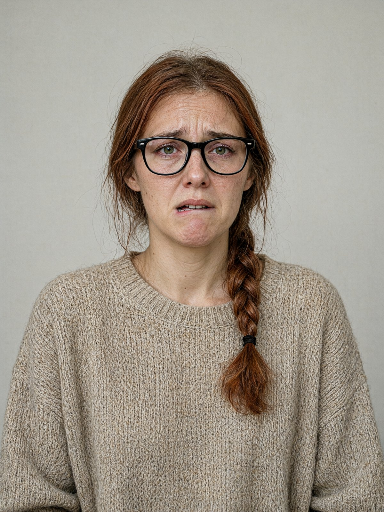

ГАЛИЦЬКЕ ВІДДІЛЕННЯ ПОЛІЦІЇ ГУНП У ЛЬВІВСЬКІЙ ОБЛАСТІ м. Львів, 13 листопада 2024 року, 10:40
Пояснення відібрав: капітан поліції Стасюк О.М., старший слідчий СВ.
Особа, що дає пояснення: Дзюба Соломія Романівна, 31 рік (нар. 11.04.1993), помічниця приватного нотаріуса.
Проживає: м. Львів, вул. Широка, 88, кв. 40. Контактний телефон: +380 98 512 30 07.
Роз'яснення прав. Слідчий роз'яснив, що відповідно до статті 63 Конституції України ніхто не зобов'язаний давати показання або пояснення щодо себе, членів своєї сім'ї та близьких родичів. Пояснення дається добровільно. Я ознайомлена з цими правами і розумію їх.
/підпис/ Дзюба С.Р.
Вибачте. Мені важко говорити, руки досі тремтять, я сьогодні майже не спала. Розкажу, як було, як пам'ятаю.
Сьогодні я прийшла на роботу о 8:50. Вхід у контору з двору, двері я відчинила своїм ключем, як завжди. Пана Андрія я побачила одразу: він лежав унизу, біля внутрішніх сходів, у кінці кабінету. Він не дихав. Я нахилилась до нього, потім одразу подзвонила в 102. Я не знаю, скільки це тривало, ну, хвилину, дві. Я була дуже налякана.
Питання: Коли ви бачили пана Андрія востаннє живим?
Вчора, у другій половині дня. Я пішла з роботи о пів на шосту. Пан Андрій був у кабінеті, сидів за столом. Він був втомлений, як останнім часом, але нормальний. Сказав мені: «Ідіть додому, Соломіє, завтра побачимось». Я дослівно не пам'ятаю, але щось таке.
Питання: Чи маєте ви ключі від квартири пана Андрія або від брами?
Ні. У мене тільки ключ від контори, вхід з двору. Від квартири ні, від брами теж ні. Брама вдень відчинена, її відчиняє двірничка рано вранці, а ввечері зачиняють на ключ. Коли я йшла о пів на шосту, брама ще була відчинена.
Питання: Чи відчувався у пана Андрія якийсь стан вчора, ви помітили щось незвичайне?
Ні. Ну, він був зосереджений і втомлений. Кілька разів ходив до свого столу, але я не звертала уваги. Він завжди говорив зі мною по-батьківськи. Він був добра людина, хоч і суворий.
Питання: Де ви були ввечері?
Вдома, з мамою. Вона живе зі мною, у неї інсульт був ще у 2023 році. Близько сьомої вечора мама впала вдома, у неї знову інсульт. Я викликала швидку. Лікарі сказали, що її треба в лікарню, і я поїхала з нею. Маму забрали в лікарню швидкої допомоги № 2 на Буковецькій. Я була там усю ніч, до ранку, поки її не перевели в неврологію. Додому я заскочила тільки вранці, переодягнутися, і одразу пішла на роботу. Вибачте… [плаче]
Питання: Чи були в конторі останніми днями конфлікти?
Так. Одинадцятого числа, ввечері, до пана Андрія прийшов син, Максим. Я сиділа в приймальні, двері кабінету були зачинені, але їх було чути. Вони сварились. Максим просив багато грошей, казав, що то борг за ноутбук. Пан Андрій відмовив. Тоді Максим крикнув: «Тобі на мене завжди було начхати!» — і грюкнув дверима так, що в мене аж серце стислось. Пан Андрій після цього довго сидів мовчки.
Сьомого листопада приходив пан Тарас Кульчицький, забудовник. Він кричав у кабінеті так, що було чути аж у приймальні. Казав: «Ти не знаєш, з ким зв'язався, Андрію!» Пан Андрій просив його говорити тихіше. Я тоді не зрозуміла, про що мова, мені здалося, що то якісь їхні справи з землею. Після цього пан Андрій був не свій.
Питання: Чи знаєте ви, де пан Андрій тримав гроші?
Я знаю. Він не таїв від мене, бо я працювала з ним з 2018 року. У лівій верхній шухляді його робочого столу лежала готівка, долари, приблизно три тисячі. Він казав, що то на непередбачене. Ключ від тієї шухляди лежав під органайзером на столі, він так і зберігав. Я сама це бачила, не раз.
Питання: Чи зникло щось у кабінеті або в квартирі?
Не знаю. Я не роздивлялась. Я ж зайшла, побачила його, і все. Я нічого не шукала і не можу сказати, що там було, а чого не було. Вибачте, я не можу згадати.
Більше я нічого не знаю. Це правда, я клянусь. Мені дуже шкода пана Андрія, він був для мене майже як батько. Прошу, знайдіть того, хто це зробив, бо я не можу зрозуміти, як таке могло статися.
Пояснення прочитано мною, зауважень і доповнень не маю. З моїх слів записано вірно.
/підпис/ Дзюба С.Р.
Пояснення відібрав: капітан поліції Стасюк О.М. /підпис/
13.11.2024, 11:05